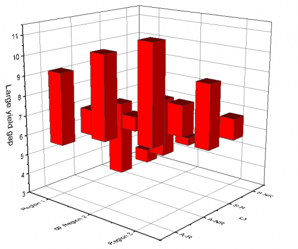

3D-Diagramm mit frei beweglichen Balken
3D-Floating-Bar
- 
Datenanforderungen
-
- Wählen Sie mindestens eine Z-Spalte aus (oder einen Bereich aus mindestens einer Z-Spalte). Falls die Z-Spalte verbundene XY-Spalten besitzt, werden die XY-Spalten verwendet; ansonsten werden die XY-Standardwerte des Arbeitsblatts verwendet.
-
oder
- Matrix: Ein Matrix der Z-Werte mit mindestens einem Objekt
Diagramm erstellen
Aktivieren Sie das Matrixblatt oder wählen Sie die erforderlichen Daten im Arbeitsblatt aus.
Wählen Sie im Menü .
Vorlage
(installiert im Origin-Programmordner)
Notizen
- Im Fall von XYZ-Daten werden die zwei Z-Werte bei den gleichen X- und Y-Koordinaten als Anfang und Ende des Balkens verwendet. Im Fall von Matrixdaten werden zwei Objekte im aktuellen Matrixblatt als Anfang und Ende des Balkens verwendet. Wenn der erste Z-Wert größer als der zweite ist, beträgt die Balkenhöhe Z1-Z2 und die Richtung ist aufwärts. Wenn der erste Z-Wert kleiner als der zweite ist, beträgt die Balkenhöhe Z2-Z1 und die Richtung ist abwärts.
- Die verbundenen X- und Y-Werte, die in der Matrix/im Arbeitsblatt abgebildet sind, bestimmen die XY-Positionen von jeder frei beweglichen Säule.
|
Hinweis: Bei 3D-Diagrammen mit frei beweglichen Balken:
|